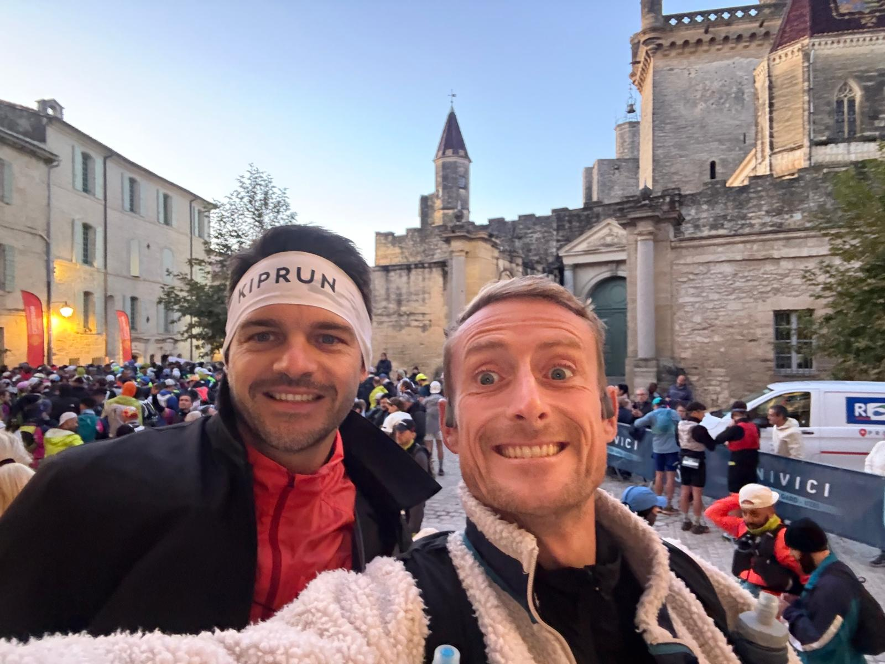
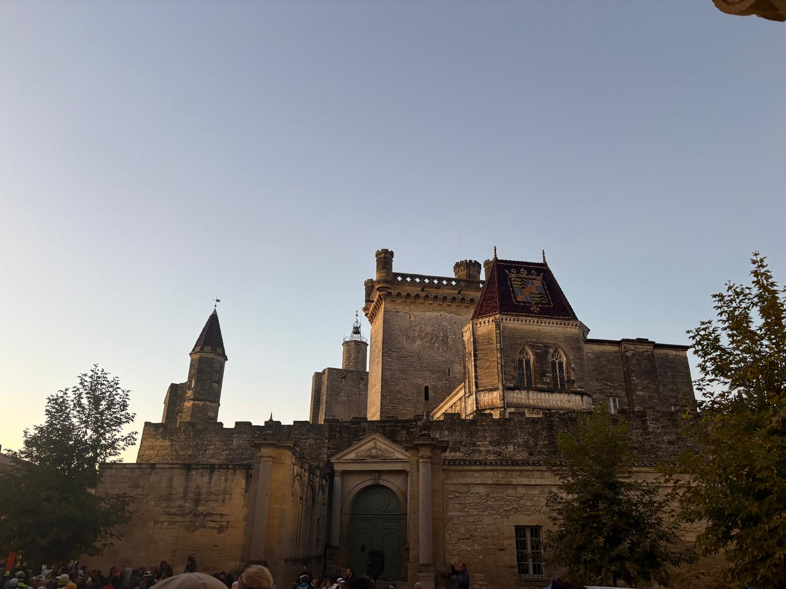
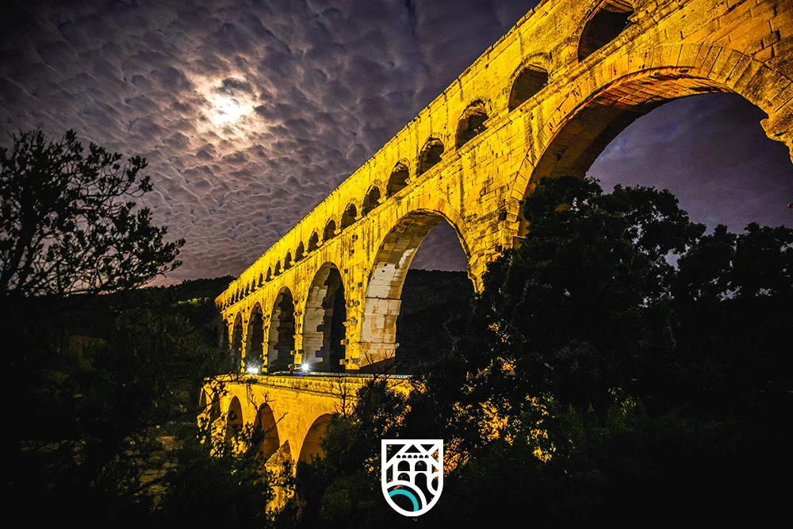
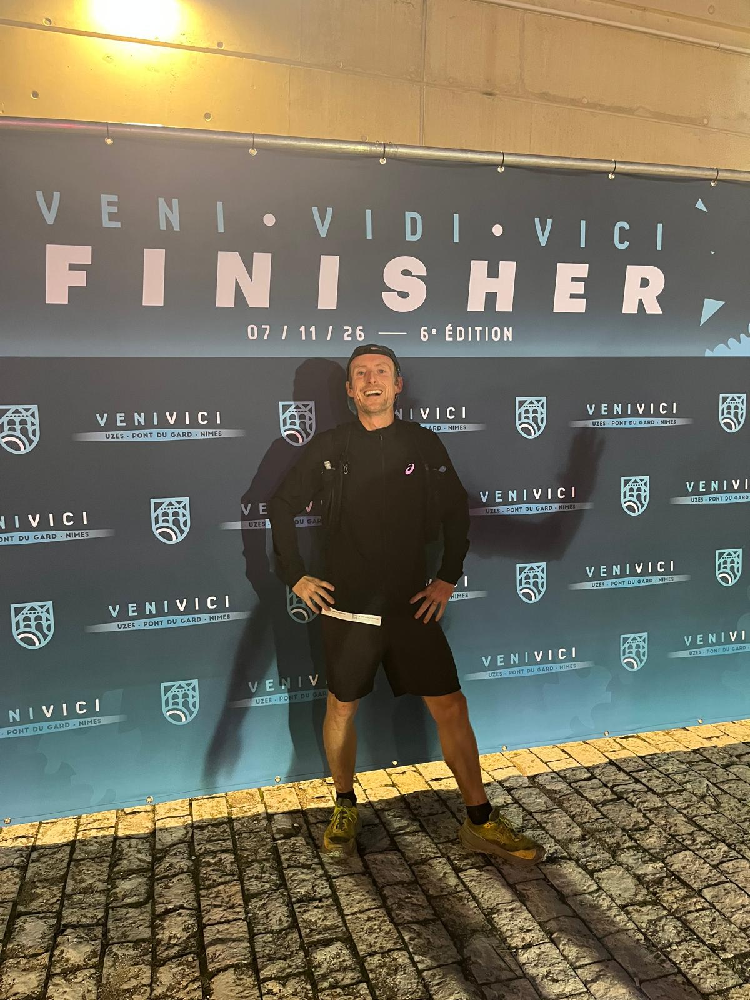
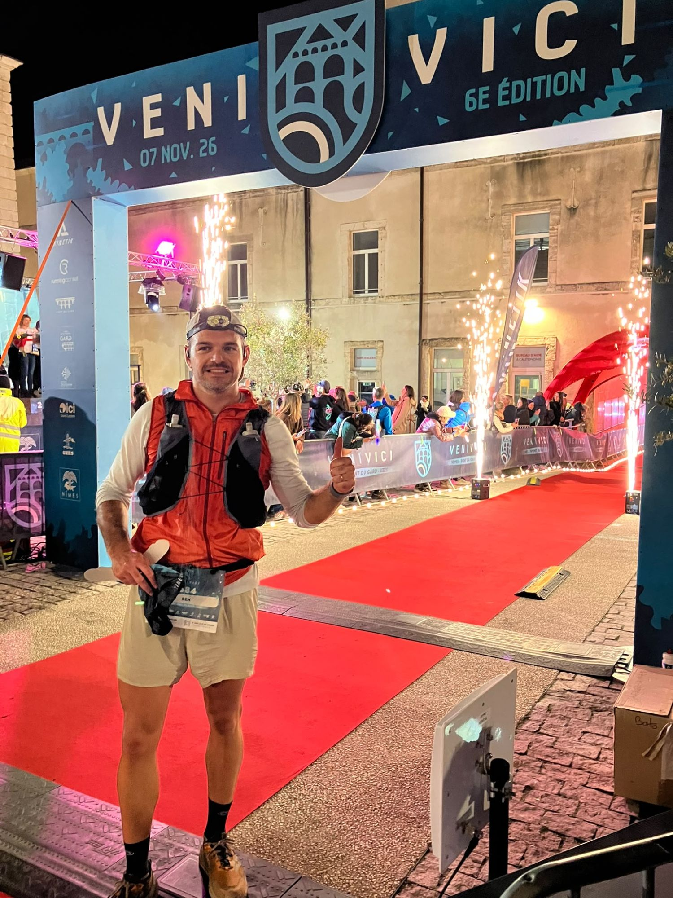
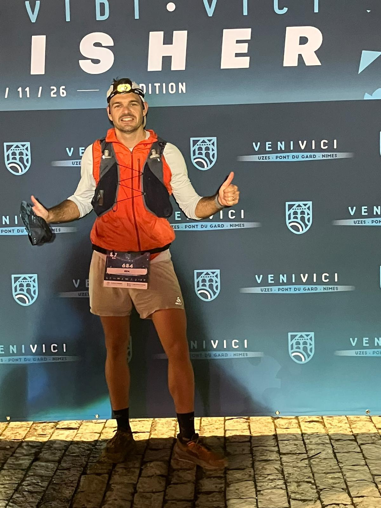

Il y a les courses qu'on fait pour le chrono, et celles qu'on fait pour ce qu'on y vit. Samedi 7 novembre, pour refermer leur saison, Jérémy HOSTINGUE et Benjamin PLUS, deux amis membres de Mrun qui ont l'habitude d'enchaîner les courses ensemble, s'offrent la VENI VICI : 87 km et 2 250 m de D+, d'Uzès à Nîmes, en passant par le Pont du Gard.
Cette fois, pourtant, chacun court la sienne. Deux vagues, deux rythmes, et des nouvelles toutes les heures. Au bout, deux finishers : Jérémy en 10 h 03, 100ᵉ au scratch ; Benjamin en 12 h 29, 469ᵉ, dans le temps qu'il s'était fixé. Entre les deux, des coups de mou, des douleurs, un second souffle — et, à chaque fois, des visages familiers pour les porter.
- Parcours
- Uzès → Nîmespar le Pont du Gard
- Distance
- 87 km6 ravitaillements
- Dénivelé
- 2 250 m D+
- Mrun
- 2 finishersJérémy & Benjamin
🤝 Ensemble, chacun sa course
Jérémy et Benjamin, c'est une amitié qui se vit souvent un dossard sur le ventre. Au printemps, on avait vu Benjamin basculer en cordée au sommet du Ventoux, sur le Grand Raid du Ventoux. Cette fois, le décor a une saveur particulière : la VENI VICI part d'Uzès, « sur mes terres gardoises », dit Benjamin. Et pour l'un comme pour l'autre, c'est le dernier grand rendez-vous de l'année.
La veille, décision prise d'un commun accord : chacun sa course, chacun son rythme. Mais pas question de se perdre de vue. Le pacte tient en une phrase : se donner des nouvelles toutes les heures.

Samedi, le jour se lève sur Uzès. Sur la place, les coureurs se massent au pied du château. Jérémy s'élance dans la première vague, à 7 h 30. Benjamin part un quart d'heure plus tard, décidé à courir à la sensation, pour voir comment les jambes répondent au fil des kilomètres.
☀️ Un parcours de carte postale
Le ciel, d'abord. Après un déluge en début de semaine, il offre aux coureurs un cadeau inespéré : un grand ciel bleu, du départ à l'arrivée.

Puis le parcours, très roulant, déroule ses cartes postales : de magnifiques villages gardois et leurs belles propriétés, de belles étendues, des carrières de pierre chargées d'histoire. Tout au long du chemin, une très belle organisation : un balisage irréprochable, des ravitos sympas, et des bénévoles au top, déguisés, en musique, qui font régner une super ambiance.
Et au 36ᵉ kilomètre, au détour du chemin, le clou du spectacle : le majestueux Pont du Gard. Le site est exceptionnel, la foule massée là porte chaque coureur. Pour Benjamin, c'est « un vrai coup de cœur ».

Seul petit regret : l'arrivée, initialement prévue dans les Arènes de Nîmes, a finalement été déplacée en raison des manifestations.
💪 Jérémy HOSTINGUE — Trente bornes dans le dur, et le jus qui revient
87 km / 2 250 m D+ — Samedi 7 novembre 2026, départ 7 h 30 dans la première vague
Rentrer avant la nuit
Pour Jérémy, l'objectif du jour tient en une phrase : rentrer avant la nuit, et éviter de sortir la frontale. Alors il part fort. Sur les chapeaux de roue, même — sans doute un peu trop confiant dans son état de forme. Au premier pointage, à Argilliers, au 15ᵉ kilomètre, il passe déjà 52ᵉ.
Le moteur qui cale
Mais un départ trop rapide finit toujours par présenter l'addition. Après le ravitaillement du 42ᵉ kilomètre, il n'y a plus grand-chose dans le moteur. Commencent alors 30 longues bornes à lutter : chasser les idées noires, garder le cap, mettre un pied devant l'autre. « C'est long, très long… » Les places défilent dans le mauvais sens : 78ᵉ à Saint-Bonnet-du-Gard, 112ᵉ à Escattes, au 74ᵉ kilomètre.
Comme par magie
Et puis, au 70ᵉ kilomètre, sans prévenir, le jus revient. Comme par magie. Les jambes se remettent à tourner, le plaisir refait surface, et Jérémy avale les derniers kilomètres en reprenant 12 places.
Amélie et les enfants sur la ligne
La ligne, enfin : 10 h 03'05", 100ᵉ au scratch. Et derrière, le vrai bonheur de la journée : retrouver Amélie et les enfants à l'arrivée. À peine la ligne franchie, premier réflexe : appeler le copain Ben, toujours en course, pour l'encourager à son tour. Le pacte des nouvelles, tenu jusqu'au bout.

Résultats — Jérémy Hostingue
- CourseVENI VICI — 87 km (6ᵉ édition)
- DateSamedi 7 novembre 2026
- Format87 km · 2 250 m D+
- Temps10 h 03'05"
- Classement scratch100ᵉ
- Classement hommes94ᵉ
- Catégorie −40 H35ᵉ
Le mot de Jérémy
10 h 03, 100ᵉ au scratch. Finalement, pas si mal au regard de cette gestion de course plutôt approximative !
Une belle façon de clôturer cette saison de trail, avec quelques leçons à retenir pour la suite !
🏡 Benjamin PLUS — Un trail à la maison
87 km / 2 250 m D+ — Samedi 7 novembre 2026, départ un quart d'heure après Jérémy
Des chemins familiers
Pour Benjamin, la VENI VICI n'est pas une course comme les autres : elle se court chez lui, dans le Gard. Le parcours l'emmène à travers des villages familiers, de belles étendues et des carrières de pierre chargées d'histoire. Puis, au 36ᵉ kilomètre, le Pont du Gard surgit au détour du chemin, et la foule lui offre son coup de cœur.
Le ravito du cœur
Au 41ᵉ kilomètre, nouvelle surprise, et pas des moindres. Sa femme, son fils, ses parents, son filleul, Amélie, la femme de Jérémy, et la petite Filou sont là, au bord du chemin, pour un ravitaillement improvisé. On s'arrête quelques minutes. On se retrouve, on reprend des forces. Deux familles réunies autour d'un coureur : c'est aussi ça, l'aventure. « Leur présence me remet du baume au cœur pour la suite. »
Serrer les dents
Mais le départ trop rapide se paie. Entre le 45ᵉ et le 54ᵉ kilomètre, la course devient plus difficile. Puis, à partir du 54ᵉ, deux douleurs s'invitent : au bas du tibia gauche, et à l'arrière de la jambe droite. Elles le ralentissent, kilomètre après kilomètre : entre Lédenon et Escattes, il cède plus de cent places. Benjamin s'accroche.
Dans la nuit, deux silhouettes
Autour du 70ᵉ kilomètre, le second souffle arrive. Et au 75ᵉ, en pleine nuit, deux silhouettes l'attendent à nouveau sur le parcours : sa femme et son fils. De quoi trouver l'élan pour rejoindre l'arrivée — en reprenant 17 places sur les derniers kilomètres.
Ses parents sur la ligne
Après 12 h 28'55" d'effort, frontale sur la tête, Benjamin franchit la ligne, 469ᵉ au scratch, dans le temps qu'il s'était fixé. Ses parents sont là pour l'accueillir : un dernier moment fort, pour conclure ce trail à la maison.


Résultats — Benjamin Plus
- CourseVENI VICI — 87 km (6ᵉ édition)
- DateSamedi 7 novembre 2026
- Format87 km · 2 250 m D+
- Temps12 h 28'55"
- Classement scratch469ᵉ
- Classement hommes423ᵉ
- Catégorie −40 H155ᵉ
Le mot de Benjamin
Au 75ᵉ, en pleine nuit, ma femme et mon fils m'attendent à nouveau sur le parcours. Cette visite surprise me fait un bien immense.
C'est le dernier de l'année. Place au repos, avant une prochaine saison plus mesurée, avec moins de courses et une priorité donnée à la qualité plutôt qu'à la quantité.
🏁 Un pacte tenu jusqu'au bout
La VENI VICI referme la saison de trail des deux amis. Pour Jérémy, place à deux ou trois semaines de repos bien méritées, avant d'attaquer début décembre le plan marathon concocté par leur ami Mat. Pour Benjamin aussi, place au repos.
Mais ce qu'on retiendra de ce samedi gardois, ce ne sont pas seulement les chronos. Ce sont des nouvelles échangées toutes les heures, un ravitaillement improvisé où deux familles se retrouvent, une femme et un fils qui attendent dans la nuit, un coup de fil passé à peine la ligne franchie. Deux courses différentes, une même aventure humaine — et la preuve que chez Mrun, on peut courir chacun à son rythme sans jamais courir seul.
Retour aux communiqués